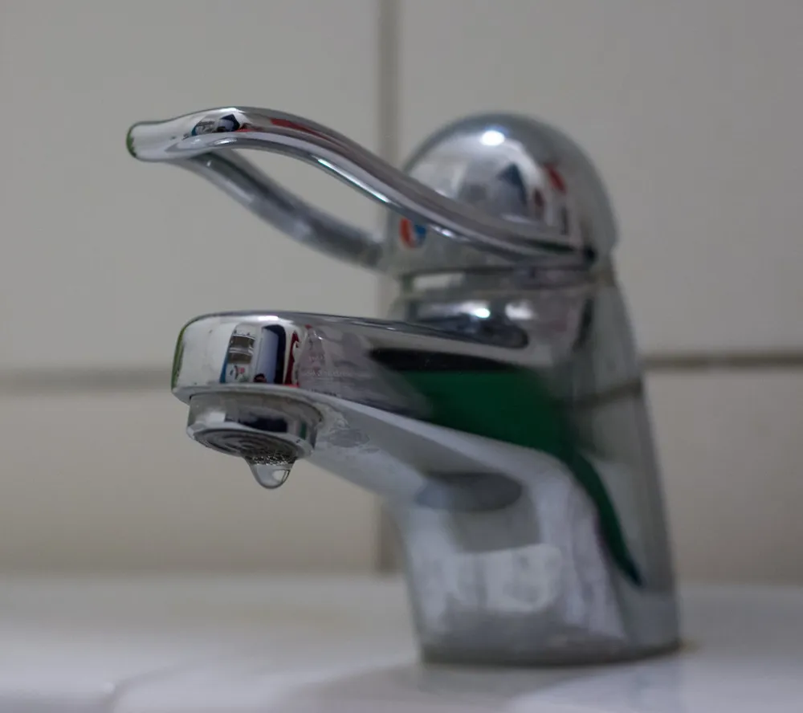

Maison & Bricolage
Plomberie, murs, électricité · 10 guides vérifiés, pas à pas.
Les fiches du domaine Maison & Bricolage
Détartrer un pommeau de douche
Jets qui partent de travers ou faiblissent : le calcaire bouche les buses. Une nuit dans le vinaigre blanc suffit le plus souvent.
Régler une porte de placard qui frotte ou penche
Porte qui frotte, penche ou ferme mal : les charnières de meuble se règlent dans trois directions avec un simple tournevis.
Déboucher des toilettes
L'eau monte dans la cuvette et ne s'évacue plus ? Le plus souvent, eau chaude, ventouse puis furet suffisent, dans cet ordre.

Réparer un robinet qui fuit
Un robinet qui goutte perd près de 100 litres d'eau par jour. Le joint ou la cartouche sont presque toujours en cause.
Chasse d'eau qui coule en permanence
Une chasse d'eau qui fuit peut perdre jusqu'à 400 litres d'eau par jour. La cause : le flotteur ou le joint du clapet.
Déboucher un évier
Ventouse, siphon, et si besoin furet : la méthode dans l'ordre, sans produit agressif.
Reboucher un trou dans un mur en placo
Cheville arrachée ou coup de poignée de porte ? Un trou dans du placo se rebouche proprement et ne se voit plus.
Remplacer une prise électrique
Une prise fendue ou qui bouge est dangereuse. La remplacer à l'identique est à la portée de tous, à condition de respecter scrupuleusement la sécurité.
Refaire un joint silicone de salle de bain
Un joint noirci ou décollé laisse passer l'eau derrière la baignoire ou la douche. Le refaire proprement est à la portée de tous.
Changer un flexible de douche
Un flexible qui fuit ou se perce se change en dix minutes, sans outil ou presque : le raccord est standard.